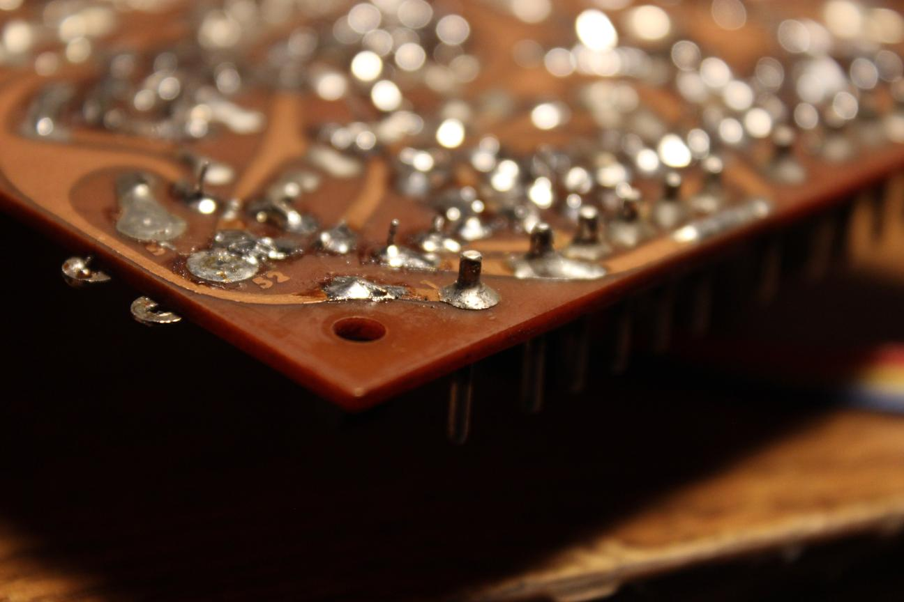
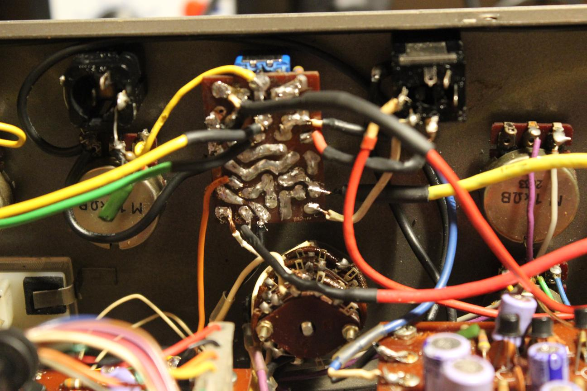
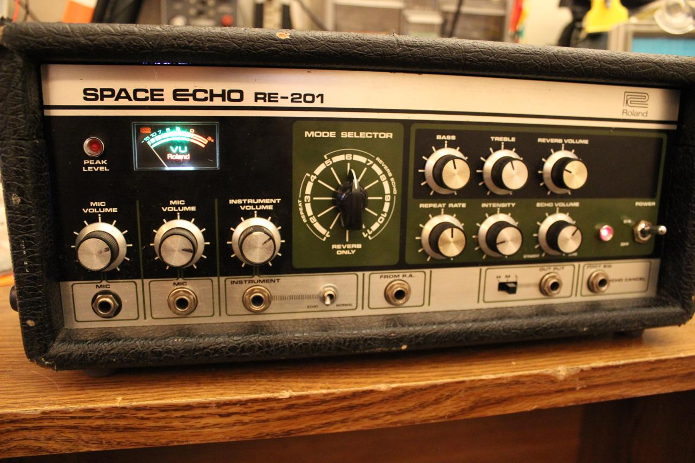

Roland RE-201

I restored this Space Echo for a local music store after it had been abandoned by a tech in the past. It had a ton of things wrong with it and it needed many hours and new parts to get it running again. When I recieved it, it was disassembled with most of the screws missing. The motor wasnt turning and to make things worse, I found that a lot of the audio wiring had been undone or redone incorrectly.
I was originally planning on tracing the boards and using a schematic to help me reconnect the loose wires but I got lucky and another customer dropped off the same model for a tune up so I at least had a reference to take pictures of.
An entire switch missing is not a good sign.
I found the switch inside connected to a PCB. The soldering was looking pretty rough.
Looks like someone replaced the coax without desoldering the old stuff.
Where does this go??
That's why I was smelling burning plastic.
I was very happy to have a reference machine at this point. It made this job a lot easier
It was an "intence" soldering job.
After I made sure that the drive circuit was all there, the motor wouldn't turn. I started investigating the motor board.
It was almost impossible with the board soldered in the chassis so I desoldered all of the connections and began to check all the possible suspects.
Every single transistor tested normal and so did all of the capacitors.
I connected just the motor circuit back to the chassis and tested it again. It started moving but was sensitive to movement so I knew it had to be a mechanical issue.

The problem was barely visible but if you look closely, you can see that the pin is separating right where the solder meets the trace. It doesn't look like a normal cold joint so this took me a long time to identify.
Bridging the gap
All soldered back together and the motor is working. Now to clean up the audio circuitry.
Starting point

Finished mini board
I wanted to clean up the job on the new coax cable too.
Heat shrink helps a lot.
The VU meter light was burnt out so I decided to give it an upgrade.
An LED fits perfectly in the socket and since the VU meter is backlit, it looks hardly any different from an incandescent.
I had both 201's side by side for comparison.
The output from the playback head was very weak compared to the good unit. I decided to service it alongside the other one and see if the issue would resolve itself.
Cleaning pots and switches...
Resurfacing pinch roller...
Mechanical alignment...
Cleaning and degaussing heads...
New tape...
New tape vs old tape
Electrical adjustments...
At this point it was clear that it wasn't an issue that would resolve itself. While adjusting the trap coil, I noticed someone had broken the ferrite slug inside which led to a lot of leakage from the bias oscillator along with the same volume issue from before. Luckily, I was able to find a replacement slug online which fit the coil and brought the leakage way down.
The serviced and working unit sounded great.
I was pretty sure that the problem was the heads after having just gone through the entire circuit so I sent them off to be relapped.
Looking a lot better
After some head alignment, the sound was back.
New thumb screws and tape door hardware
New feet

A final clean of the tolex and faceplate and this machine was looking and sounding better than it had in a long time.